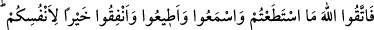
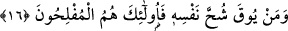

mağfirette bulunsun.” İşte bu nükte korunmuş olan sırlardan ve sükût geçilmiş
hikmetlerdendir.
Mişkatü’l-mesâbıyh’de nakledildiğine göre Peygamberimiz (s.a.) bir gün minberde
halka hitâb ediyordu. O sırada torunları Hasan ve Hüseyin geldiler. Al gömlekler
giymişler, düşe kalka yürüyorlardı. Peygamber Efendimiz minberden indi ve ikisini
kucaklayıp önünde bir yere oturttu. Sonra şöyle dedi “Allah doğru söylemiştir.
Kuşkusuz mallarınız ve evladlarınız sizin için birer imtihandır. Şu iki yavrumun düşe
kalka yürüdüklerini görünce dayanamadım, konuşmamı kesip onları ayağa
kaldırdım.”[168] Sonra Peygamberimiz (s.a.) konuşmasına devam etti.
İbn Atiyye der ki: Bu ve benzerleri, faziletli olan insanların fitneleridir. Bir de
câhillerin ve fâsıkların fitneleri var ki bu onları helâk edecek her türlü fiile götürür.
Derler ki kıyamet günü insana ilk yapışacak kişi karısı ve çocuklarıdır. Onlar kişiyi
Allah’ın huzurunda durdururlar ve derler ki: “Ey Rabbimiz bundan bizim hakkımızı al!
Çünkü bu kişi bilmediklerimizi bize öğretmedi, bize haram yedirdi, biz yediklerimizin
haram olduğunu bilmiyorduk.” Bunun üzerine o kişiden karısının ve çocuklarının hakları
alınır, böylece âile fertleri yaptığı iyilikleri yerler ve sonunda hiç bir iyiliği kalmaz. Bu
nedenle Peygamberimiz (s.a.) şöyle buyurmuştur: “Kıyamet günü kişi getirilir,
kendisine bu kişinin âile fertleri iyiliklerini yedi denir.”[169]
Selef âlimlerinden birisi derki: “Bir insanın âile fertleri onun tâatlarının kurdudur. Bu
öyle bir kurttur ki yiyeceğe, elbiseye ve başka şeylere düşer. Buradan hareketle selef
âlimlerinden birçoğu malı ve evlenip de çoluk çocuğa karışmayı doğrudan doğruya
terketmişler, bunlardan tamamıyla yüz çevirmişlerdir. Çünkü insanı Allah’tan alıkoyan
her şey o insan açısından uğursuzdur. Bu nedenle Peygamberimiz (s.a.) duâsında şöyle
derdi: “Allah’ım beni seven ve çağrıma uyan kimseye az mal ve az çocuk ver. Bana
gazab edene, çağrıma uymayana çok mal ve çok çocuk ver.”
Burada Peygamber Efendimiz’in (s.a.) yapmış olduğu tesbit nefsine mağlup olanlar
içindir. Buna karşılık Hz. Enes (r.a.) hakkında yapmış olduğu; “Allah’ım onun malını ve
çocuğunu arttır. Ona vermiş olduğun şeyleri bereketlendir; hayrını çok kıl,”[170]
şeklindeki duâsı ise böylesine nefsine mağlup olmayanlar içindir.
16. O halde gücünüz yettiğince Allah’a isyandan kaçının, dinleyin, itâat edin ve
mallarınızı Allah yolunda harcayın; bunlar sizin için hayırlıdır. Kim nefsinin
cimriliğinden korunursa işte onlar kurtuluşa erenlerdir.
“O halde gücünüz yettiğince Allah’a isyandan kaçının.” Yâni Allah’a karşı takvâlı
olma hususunda olanca gücünüzü ve takatinizi harcayın. Âlimlerden birisi bu âyet-i